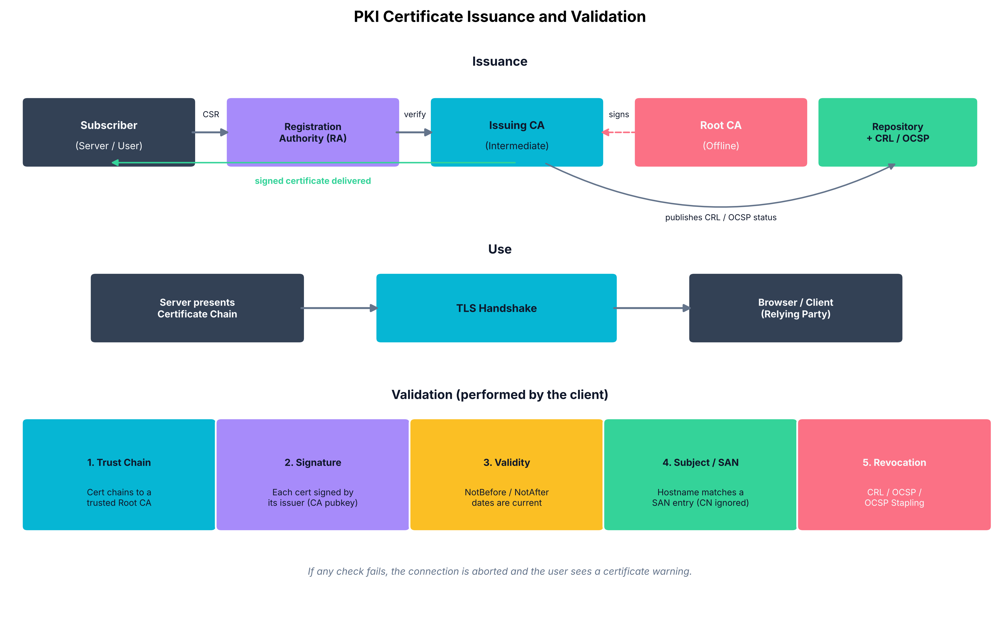
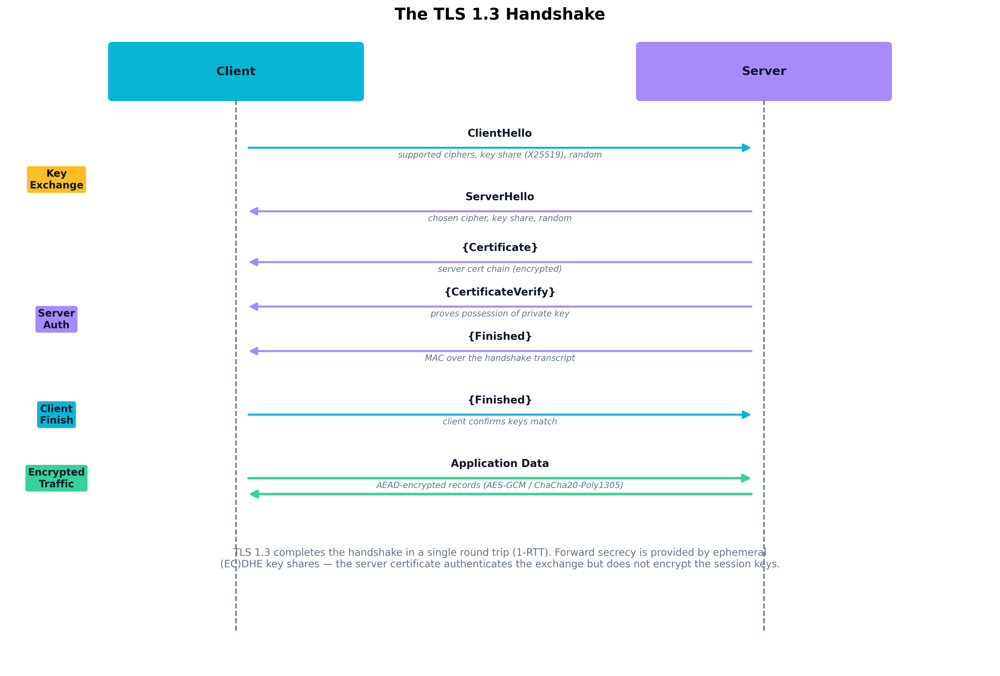

Chapter 8: Cryptography and Public Key Infrastructure
Learning Outcomes:
- Architect a Public Key Infrastructure (PKI), including certificate authorities, registration authorities, and the certificate lifecycle.
- Evaluate the impact of post-quantum cryptography (PQC) on existing systems and migration plans.
- Analyze advanced cryptographic concepts, including key stretching, key splitting, forward secrecy, and homomorphic encryption.
- Apply cryptographic techniques to secure data at rest, in transit, and in use.
- Implement envelope encryption and hardware-accelerated cryptographic operations.
- Design certificate-based, passwordless, and mutual authentication mechanisms.
- Formulate data sanitization, anonymization, and tokenization strategies.
- Evaluate the use cases for immutable databases, blockchain, and secure multiparty computation.
Introduction
Cryptography is the layer underneath nearly everything else in security. Authentication, secure messaging, software updates, payment systems, signed boot chains, the very URL bar in your browser — all of them rest on a small set of mathematical primitives and a much larger set of operational decisions about how those primitives are used. Get the math right and the operations wrong, and your system is still broken.
This chapter focuses on those operational decisions. We start with Public Key Infrastructure (PKI) — the global trust system that lets a browser in Boston accept that a server in Singapore really belongs to the bank it claims to be. Next come the day-to-day applications of cryptography: protecting data at rest, in transit, and in use, sanitizing data when its useful life is over, and managing keys. We then look at advanced techniques — envelope encryption, forward secrecy, homomorphic encryption — that solve problems traditional cryptography cannot. Finally, we confront the threat of quantum computing and the migration to post-quantum cryptography that organizations are beginning today, even though the threat is still years away.
The goal is not to make you a cryptographer. The goal is to make you the kind of architect who knows when to call one — and who can recognize a dangerous design before it ships.
How Do We Architect a Robust PKI?
A Public Key Infrastructure (PKI) is the combination of people, policies, hardware, and software that issues, manages, and revokes the digital certificates that bind public keys to identities. Without PKI, asymmetric cryptography is useless at scale: anyone can generate a key pair and claim to be anyone, and there is no scalable way to verify those claims. PKI solves that problem by introducing trusted third parties — certificate authorities — that vouch for identity through cryptographically signed assertions called digital certificates.
Certificate Authorities and Registration
A Certificate Authority (CA) is the organization that issues certificates. Public CAs (DigiCert, Let’s Encrypt, Sectigo, GlobalSign) issue certificates trusted by web browsers and operating systems. Private CAs are run inside enterprises to issue certificates to internal systems, employees, and devices that the public CAs would have no business vouching for.
In any well-designed PKI, the CA is not a single server. It is a hierarchy:
- Root CA — The top of the trust chain. Its certificate is self-signed and distributed out-of-band into operating system and browser trust stores. Because compromise of a root CA destroys the entire hierarchy, root CAs are kept offline in physically secured vaults and only brought online for the rare ceremony of signing a new intermediate.
- Intermediate (Issuing) CA — A CA whose certificate is signed by the root. Day-to-day certificates are issued from intermediates so that the root’s signing key can stay offline. If an intermediate is compromised, it can be revoked without taking down the whole PKI.
- Registration Authority (RA) — The component
(sometimes a separate organization, sometimes a function inside the CA)
that handles identity vetting. The RA verifies that a
request for a certificate for
bank.example.comactually comes from someone authorized to represent that domain. The CA only signs certificates that the RA has approved.
A certificate’s lifecycle runs through several stages. A subscriber generates a key pair and a Certificate Signing Request (CSR) containing the public key and identity information. The RA performs domain validation (DV), organization validation (OV), or extended validation (EV) depending on the certificate class, and the issuing CA then signs the certificate. The subscriber installs it and presents it to relying parties during normal operation. Toward the end of its validity period the subscriber renews it; if the private key is compromised first, the certificate is revoked.

Figure 8.1: The end-to-end lifecycle of a digital certificate. Issuance flows through the registration authority and issuing CA up to the offline root. Use occurs through TLS handshakes. Validation — performed every time the certificate is presented — checks the trust chain, signature, validity dates, subject match, and revocation status.Quick Check 8.1
- Recall. What do the root CA, intermediate CA, and registration authority each do in a well-designed PKI?
- Discriminate. A subscriber sends a CA a file containing its public key and identity claims, signed with the matching private key. Is that file a CSR, a certificate, or a CRL?
- Apply. An enterprise keeps its root CA online and uses it to issue daily leaf certificates directly. Name two design problems with that choice and the safer structure the chapter recommends.
Answers — Quick Check 8.1
- The root CA is the offline trust anchor, the intermediate CA handles day-to-day issuance, and the RA performs identity vetting before issuance.
- A Certificate Signing Request (CSR). It carries the subscriber’s public key and identity claims to the issuance workflow. A certificate is what the CA returns (signed by the CA), and a CRL is a list of revoked serial numbers.
- The root’s private key is exposed to network attack, and a compromise would invalidate every certificate beneath it. Because a root cannot simply be revoked, recovery means pushing a new trust anchor to every relying party’s trust store. The safer design is an offline root signing one or more intermediates, with the RA approving requests before those intermediates issue leaf certs.
Certificate Extensions, Templates, and OCSP Stapling
A certificate is not just a wrapper around a public key — it carries structured fields, called extensions, that constrain how the certificate may be used.
- Subject Alternative Name (SAN) — The list of hostnames the certificate is valid for. Modern browsers ignore the legacy Common Name (CN) field entirely; if a hostname is not in the SAN list, the certificate is invalid for that name.
- Key Usage and Extended Key Usage (EKU) — Restrict the cryptographic operations the certificate can perform: server authentication, client authentication, code signing, email protection, time stamping. A certificate issued for “server authentication” cannot legitimately be used to sign code.
- Basic Constraints — Marks whether a certificate is
a CA. A leaf certificate that omits this flag (or sets it to
CA:FALSE) cannot issue further certificates downstream. - Authority Information Access (AIA) and CRL Distribution Points (CDP) — URLs where relying parties can find the issuer’s certificate and revocation information (CRLs and OCSP, both explained below), respectively.
In an enterprise PKI, certificates are typically issued from templates that pre-define these extensions for a given role: “Domain Controller Authentication,” “Smart Card Logon,” “Web Server.” Templates make issuance auditable and consistent.
Example
Reading a real TLS certificate
The output of
openssl x509 -in cert.pem -noout -textfor a typical web server certificate includes (abbreviated):Subject: CN = api.example.com Issuer: CN = Example Issuing CA, O = Example Inc. Validity: Not Before: Apr 3 00:00:00 2026 GMT Not After : Jul 2 23:59:59 2026 GMT (90-day lifetime) X509v3 Subject Alternative Name: DNS:api.example.com, DNS:api-internal.example.com X509v3 Basic Constraints: critical CA:FALSE X509v3 Key Usage: critical Digital Signature, Key Encipherment X509v3 Extended Key Usage: TLS Web Server Authentication X509v3 CRL Distribution Points: URI:http://crl.example-ca.com/issuing.crl Authority Information Access: OCSP - URI:http://ocsp.example-ca.com CA Issuers - URI:http://certs.example-ca.com/issuing.crt CT Precertificate SCTs: [signed timestamps from two public CT logs]Notice five things at once: this certificate is not a CA (
CA:FALSE), it is restricted to server authentication only (the EKU forbids using it to sign code or authenticate a client), it has a short lifetime (90 days), it carries revocation pointers (a CRL distribution point and, in this enterprise example, an OCSP responder), and it has been logged in Certificate Transparency (covered below). Every one of those properties is a control — and any one of them missing should make a relying party suspicious.
Revocation is the Achilles’ heel of classical PKI. The original mechanism, Certificate Revocation Lists (CRLs), is a signed list of revoked serial numbers that grows over time and must be downloaded by relying parties. The Online Certificate Status Protocol (OCSP) lets a client query the CA in real time for the status of a single certificate — but doing so leaks browsing data to the CA and adds round-trip latency. OCSP stapling fixes both problems: the server periodically fetches a signed OCSP response from its CA and “staples” it to the TLS handshake, so the client gets fresh revocation information without contacting the CA at all.
The public web, however, is moving away from live OCSP. The CA/Browser Forum made OCSP optional and CRLs mandatory for publicly trusted TLS CAs in 2024 (CA/Browser Forum 2023), and Let’s Encrypt shut down its OCSP responders in August 2025 (Let’s Encrypt 2025b). Browsers instead check revocation data they download in bulk — Chrome’s CRLSets and Firefox’s CRLite — avoiding the privacy leak and the latency. OCSP and stapling remain common in enterprise PKIs and on the exam, but CRLs and short lifetimes are the direction of travel.
Key Point Revocation is the part of PKI that breaks under stress. Browsers historically “soft-fail” on OCSP errors — if the OCSP responder is unreachable, the connection still proceeds. The practical answer is to make revocation matter less: short-lived certificates (the window of abuse is naturally bounded), stapling where OCSP is still used, and automation so that replacing a certificate is routine rather than an emergency.
Certificate Deployment and Integration Approaches
Modern PKI is rarely managed by hand. Automated Certificate Management Environment (ACME), the protocol Let’s Encrypt invented and the industry has adopted, lets servers prove control of a domain and obtain or renew a certificate without human intervention. Inside the cloud, services like AWS Certificate Manager, Azure Key Vault Certificates, and GCP Certificate Manager issue and rotate certificates as part of platform-managed infrastructure.
Integration patterns to know:
- TLS termination at a load balancer or CDN. The certificate lives on the edge; backend traffic uses internal certificates from a private CA.
- Mutual TLS (mTLS). Both sides present certificates. Common in service meshes (Istio, Linkerd) where every workload has a short-lived identity certificate issued by an internal CA.
- Certificate pinning. A client hard-codes the expected certificate (or its public key hash) and refuses any other. Pinning protects against rogue CAs but creates serious operational risk if keys must be rotated unexpectedly — browsers removed web-based pinning (HTTP Public Key Pinning) years ago in favor of Certificate Transparency logs, though mobile apps and internal services still pin.
- Certificate Transparency (CT). A public, append-only log of every certificate issued by a participating CA. Major browsers require valid CT proof for publicly trusted certificates, making it possible to detect unauthorized issuance after the fact.
Shrinking lifetimes make automation a necessity. Under CA/Browser Forum Ballot SC-081, the maximum lifetime of a publicly trusted TLS certificate fell from 398 to 200 days for certificates issued on or after 15 March 2026, drops to 100 days on 15 March 2027, and reaches 47 days on 15 March 2029; the reuse period for domain validation shrinks to 10 days by 2029 (CA/Browser Forum 2025b). Let’s Encrypt, which issues 90-day certificates today, plans to reach 45 days by 2028 (Let’s Encrypt 2025a). Private CAs set their own limits.
| Certificate Type | Validation | Typical Use | Lifetime |
|---|---|---|---|
| Domain Validated (DV) | Proof of domain control only | Most public websites | Public cap (200 days in 2026); 90 days common with ACME |
| Organization Validated (OV) | Domain control + organization vetting | Corporate sites, B2B portals | Public cap (200 days in 2026) |
| Extended Validation (EV) | Full legal entity verification | Banks, high-trust commerce (browsers no longer show a special EV indicator) | Public cap (200 days in 2026) |
Wildcard (*.example.com) |
DV/OV; covers any single label | Multi-subdomain deployments | Public cap (200 days in 2026) |
| Code Signing | Publisher identity, hardware-bound keys | Software distribution | Up to 460 days (public CAs, since March 2026) (CA/Browser Forum 2025a) |
| Client / Smart Card | Identity proofing of a person | Workforce authentication | Set by policy; often 1–3 years |
| Internal / Private CA | Defined by enterprise policy | mTLS, device, service identity | Hours to years |
Quick Check 8.2
- Recall. Which certificate field controls hostname validity, and what public mechanism lets domain owners detect unauthorized certificate issuance?
- Discriminate. A certificate issued for TLS web server authentication is used to sign software. Which extension should have prevented that misuse?
- Apply. Browsers often soft-fail when an OCSP responder is unavailable. What two operational practices from this section reduce the practical pain of revocation?
Answers — Quick Check 8.2
- Subject Alternative Name (SAN) controls hostname validity, and Certificate Transparency (CT) lets domain owners detect rogue issuance after the fact.
- Extended Key Usage (EKU). It constrains what the certificate may legitimately be used for.
- Short-lived certificates and OCSP stapling (backed by ACME automation). Short lifetimes naturally limit the abuse window even when revocation is imperfect, and stapling avoids direct client-to-CA checks where OCSP is still used.
How Do We Apply Cryptography in the Real World?
Once a PKI is in place, cryptography becomes a tool for protecting data through three distinct phases of its life: at rest on disk, in transit across a network, and in use while it is being processed in memory. Each phase has its own threats, its own primitives, and its own performance and operational trade-offs.
Data at Rest, in Transit, and in Use
Data at rest lives on storage media — disks, SSDs, backup tapes, object storage, database files. The dominant control is symmetric encryption (AES-256 in GCM or XTS mode) using keys held in a dedicated Key Management Service (KMS) or Hardware Security Module (HSM). Full-disk encryption (BitLocker, LUKS, FileVault), database transparent data encryption (TDE), and cloud storage encryption all fit this model. The threat addressed is physical theft of the medium and unauthorized access to backups; encryption at rest does almost nothing against an attacker who has compromised the running operating system, because the OS already has the keys mounted.
Data in transit moves over networks. The dominant control is TLS for general traffic, IPsec (or TLS-based VPNs) for encrypted tunnels between sites and remote users, SSH for administrative sessions, and S/MIME or PGP for end-to-end protected email. TLS combines asymmetric cryptography (for authentication and key exchange) with symmetric cryptography (for bulk data) so that you get the trust properties of public-key crypto with the speed of symmetric crypto.
Data in use is the hardest phase. Once data is decrypted into RAM to be processed, anyone with privileged access to that process — a malicious admin, a kernel-level attacker, a hostile cloud insider — can read it. Three classes of solution have emerged:
- Confidential computing uses hardware features (Intel SGX and TDX, AMD SEV-SNP, Arm CCA, AWS Nitro Enclaves) to create trusted execution environments (TEEs) whose memory is isolated, and on most of these platforms encrypted, so that even the host operating system or hypervisor cannot read it.
- Homomorphic encryption allows computation on ciphertext without decrypting it (covered in detail later in this chapter).
- Secure multiparty computation (SMPC) lets multiple parties jointly compute a function over their inputs without any party learning the others’ inputs.
| Property | Symmetric Cryptography | Asymmetric Cryptography |
|---|---|---|
| Key model | One shared secret key | Key pair (public + private) |
| Speed | Very fast; gigabytes/second | Slow; thousands of ops/second |
| Typical algorithms | AES, ChaCha20 | RSA, ECDH/ECDSA, Ed25519 |
| Strength of “good” key | 128–256 bits | 2048–4096 bits (RSA), 256 bits (EC) |
| Dominant use | Bulk data encryption | Authentication, key exchange, signatures |
| Key distribution problem | Hard — requires a secure channel | Eased — public keys can be shared openly, but must be authenticated (that is what PKI is for) |
Secure Email, Non-Repudiation, and Privacy Use Cases
Email security uses two overlapping tools. S/MIME binds email signing and encryption to X.509 certificates issued by an enterprise or public CA; it integrates well with Outlook and other corporate clients but does not work without the PKI behind it. PGP / OpenPGP uses a decentralized web of trust in which users sign each other’s keys directly; it predates corporate PKI and survives in security-conscious communities and software distribution.
Both achieve non-repudiation through digital signatures: a message signed with a private key cannot plausibly be denied by the key’s owner, because no one else could have produced the signature — provided the key was under the owner’s sole control (which is why signing keys live in HSMs and smart cards). Non-repudiation is what gives digital signatures legal weight in many jurisdictions for contracts, audit logs, and software releases.
Data Sanitization, Anonymization, and Tokenization
When data outlives its useful life — or needs to be analyzed without exposing the underlying subjects — cryptography offers several techniques to shrink or eliminate the sensitive surface.
- Data sanitization deliberately destroys data so that recovery is infeasible. NIST groups methods into clear (overwriting), purge (a drive’s secure-erase command, cryptographic erase, or degaussing), and destroy (shredding or incineration) (National Institute of Standards and Technology 2025b). One overwrite pass is enough for modern magnetic drives, but overwriting is unreliable on SSDs, where wear-leveling and spare cells hide data from the operating system; use the drive’s sanitize command, cryptographic erase, or physical destruction. Degaussing works on magnetic media only.
- Cryptographic erasure destroys the key under which data was encrypted, rendering the ciphertext permanently unrecoverable. This is the dominant sanitization technique for cloud storage, where physical destruction is not an option.
- Anonymization removes identifying information so the data subject cannot be re-identified. True anonymization is irreversible and surprisingly difficult; many “anonymized” datasets have been re-identified through linkage attacks.
- Pseudonymization replaces identifiers with consistent surrogate values so the data is still usable for analytics but does not directly identify anyone. Reversible by anyone with the mapping table.
- Tokenization replaces sensitive values (credit card numbers, SSNs) with non-sensitive tokens that have no mathematical relationship to the original. The mapping is held in a dedicated token vault. Tokenization is extensively used in PCI DSS environments because it can take downstream systems that only see tokens out of PCI scope.
- Data masking displays partial or fake values (for
example,
****-****-****-1234) to users who do not need the underlying data. Masking is a presentation-layer control, not a cryptographic one.
Certificate-Based, Passwordless, and Mutual Authentication
Passwords are the worst authentication factor in widespread use. Cryptography offers better alternatives:
- Certificate-based authentication uses a client certificate (often on a smart card or hardware token) to prove identity. Common in government, defense, and high-security enterprises.
- Passwordless authentication typically means FIDO2 / WebAuthn (consumer-facing versions are branded passkeys), in which an authenticator (a YubiKey, Touch ID, Windows Hello) holds a private key and produces a signed challenge response that is bound to the website’s real origin. The server stores only the corresponding public key, so a server-side breach exposes nothing usable, and a look-alike phishing site cannot relay the response.
- Mutual TLS (mTLS) authenticates both parties of a connection by certificate. Standard in service-mesh architectures and increasingly common for high-value APIs.
- Code signing is authentication for software: the publisher signs each release with a private key (usually held in an HSM), and the operating system verifies the signature before allowing execution. Code signing is the foundation of secure update systems and modern application allowlisting.
Quick Check 8.3
- Recall. What is the dominant cryptographic control for data at rest, for data in transit, and for data in use?
- Discriminate. A dashboard shows
****-****-****-1234to a call-center agent; a payment processor replaces the real card number with a vault-backed surrogate used in downstream systems. Which is masking and which is tokenization?- Apply. A company wants phishing-resistant workforce authentication and strong service-to-service identity inside a service mesh. Which two mechanisms from the chapter fit best, and why?
Answers — Quick Check 8.3
- Data at rest is mainly protected with symmetric encryption and keys in a KMS or HSM. Data in transit is protected with TLS, IPsec, or SSH. Data in use needs controls such as confidential computing, or more specialized approaches like HE or SMPC.
- The first is data masking. The second is tokenization.
- Use FIDO2 / WebAuthn for workforce logins because the server stores only a public key and the authenticator signs challenges. Use mTLS for service-to-service identity because both sides authenticate with certificates.
Case Study
The Mad Hatter and the Three-Seventeen A.M. Outage
The Mad Hatter, lead cryptographer at Teatime Tech, takes a frantic call at 3:17 a.m. The company’s flagship payments API — the one Fortune 500 customers depend on for real-time settlement — has been refusing connections for forty-five minutes. Support phones are lit up, and the largest client is threatening to invoke the SLA penalty clause.
The on-call engineer has spent the first thirty minutes hunting through application logs, then the load balancer, then DNS. Nothing is wrong. The pods are healthy, the database is responsive, and the certificates on the edge servers are within their validity windows. He escalates to the Hatter because he is out of ideas, not because he expects cryptography to be the answer.
The Hatter runs
openssl s_client -connect api.teatime.example:443 -showcertsfrom his laptop and exhales. The leaf certificate is fine. The root in every modern trust store is fine. The link in the middle — the intermediate CA that the company has been issuing from for nine years — quietly expired at 2:32 a.m. Staging passed its tests only because it pins the old intermediate as a trust anchor and never checks its expiry.The fix takes forty seconds: the public CA had cross-signed a replacement intermediate two years earlier. The Hatter pushes a new chain bundle to the load balancer, the engineer reloads the TLS configuration, and the API comes back online. The lawyers spend the next two weeks haggling over the SLA penalty.
The post-mortem produces three permanent changes. First, every certificate in the hierarchy — leaves, intermediates, internal CAs, code-signing certificates, and the offline root — goes into an automated expiration tracker that emails and pages well ahead of expiry. Second, intermediate-CA renewals become change-controlled production deployments, dry-run in staging and tested against a matrix of client trust stores. Third, every public-facing leaf certificate moves to ACME automation, so human attention is spent on the few things that truly need humans — root and intermediate ceremonies.
The lesson the Hatter writes into the runbook on his way out the door at 6 a.m.: certificates in the middle of a chain are exactly as critical as certificates at the edge — and far more often forgotten.
Code Signing, Digital Signatures, and Software Provenance
A digital signature provides three properties simultaneously: authentication (the signer is who they claim), integrity (the data has not been modified), and non-repudiation (the signer cannot deny having signed). The mechanics are simple in outline: hash the data, sign the hash with the signer’s private key (often loosely described as “encrypting the hash”), and let anyone verify with the matching public key that the signature fits a freshly computed hash.
Software provenance extends this idea to supply chains. Sigstore and its Cosign tool sign container images and other artifacts using short-lived certificates tied to OIDC identities, with signatures published to a public transparency log. In-toto attestations record each step of a build pipeline, giving a verifiable record that an artifact came from specific source code through specific build steps. Signed Software Bills of Materials (SBOMs) add cryptographic evidence of who put each component there.
Centralized vs. Decentralized Key Management
Where do the keys actually live?
- Centralized key management keeps keys inside a small number of well-protected systems — typically a Hardware Security Module (HSM) or a managed cloud service (AWS KMS, Azure Key Vault, GCP Cloud KMS). All cryptographic operations happen at or through that central service. This concentrates risk, but it also concentrates auditing, rotation, and access control.
- Decentralized key management distributes keys across many endpoints — for example, FIDO2 authenticators, where every user’s device holds its own private key and no central server ever sees it. Decentralization eliminates the single point of failure but makes recovery, audit, and rotation much harder.
Most enterprise deployments are hybrid: centralized for service identities, application data, and database encryption; decentralized for end-user authentication and device-bound keys.
Cryptographic Erase, Obfuscation, Serialization, and Lightweight Cryptography
Cryptographic erase was covered above. A handful of additional concepts fill out the practical toolkit:
- Hashing maps data of any size to a fixed-length digest that cannot practically be reversed and changes completely if one input bit changes. Hashes provide integrity checks, are the first step of every digital signature, and (with salting and key stretching) store passwords. Use SHA-256, SHA-3, or stronger; MD5 and SHA-1 are collision-broken and unsuitable for new security uses.
- A one-time pad (OTP) XORs the message with a truly random key that is as long as the message, used once, and kept secret. It offers provably perfect secrecy, but distributing and never reusing such keys is impractical, and a reused pad leaks the XOR of the two plaintexts. AES and ChaCha20 are the practical substitutes.
- Obfuscation scrambles data or code in a way that is difficult — but not provably impossible — to reverse. Obfuscation is not cryptography. It raises the cost of analysis but offers no mathematical guarantee.
- Cryptographic serialization formats (JOSE / JWT, COSE, CMS / PKCS#7) standardize how signed and encrypted blobs are encoded so they can travel between systems without ambiguity.
- Lightweight cryptography is designed for constrained devices — IoT sensors, smart cards, RFID tags — that cannot afford the CPU, memory, or power budget of AES on a modern server. NIST standardized the Ascon family (authenticated encryption and hashing) for this purpose in SP 800-232 (National Institute of Standards and Technology 2025a).
- Legal, regulatory, and resource considerations shape every choice above. HIPAA and GDPR breach rules treat properly encrypted data more leniently, PCI DSS requires stored card numbers to be unreadable, and US federal systems require FIPS 140-3 validated modules. Battery, CPU, latency, and bandwidth limits push toward lightweight algorithms and hardware acceleration.
What Are Advanced Cryptographic Concepts?
Beyond the bread-and-butter of “encrypt at rest, encrypt in transit,” several advanced techniques solve problems that classical primitives alone cannot handle.
Envelope Encryption, AEAD, and Hardware Acceleration
Envelope encryption is the operational pattern that makes large-scale cryptography practical. Encrypting a 100 GB file directly under a master key is awkward: the key must be online for the entire operation, rotation requires re-encrypting everything, and a single compromise has enormous blast radius. Envelope encryption splits the work into two layers:
- A randomly generated Data Encryption Key (DEK) encrypts the data itself.
- A more carefully protected Key Encryption Key (KEK) — held in an HSM or KMS — encrypts the DEK.
The encrypted DEK is stored alongside the ciphertext. To decrypt, the system asks the KMS to unwrap the DEK, then decrypts the data locally. Rotation of the KEK only requires re-wrapping each DEK, not re-encrypting all the data. This is the model used by every major cloud KMS.
Example
Encrypting a single object with envelope encryption
When an application uploads a 5 GB customer data file to S3 with envelope encryption enabled, the steps are:
- The application calls
kms:GenerateDataKeyagainst a KMS-resident KEK namedarn:aws:kms:...:key/customer-data. KMS returns two values: a 256-bit plaintext DEK (used immediately) and the same DEK wrapped under the KEK (an encrypted blob a few hundred bytes long).- The application uses the plaintext DEK with AES-256-GCM to encrypt the 5 GB object locally, which is fast on AES-NI hardware.
- The application zeroes out the plaintext DEK in memory as soon as encryption finishes. The wrapped DEK is stored as object metadata next to the ciphertext.
- To decrypt later, the application sends the wrapped DEK back to KMS via
kms:Decrypt. KMS unwraps it inside the HSM, returns the plaintext DEK, and the application decrypts the object — then zeroes the DEK again.Three properties fall out of this design: the long-lived KEK never leaves the HSM, KEK rotation requires only re-wrapping the small DEKs (not re-encrypting petabytes), and destroying the KEK cryptographically erases every object encrypted under it. This is exactly how AWS S3 SSE-KMS, Azure Storage CMK, and GCP CMEK all work under the hood.
Authenticated Encryption with Associated Data (AEAD) is the modern category of symmetric algorithms — AES-GCM, ChaCha20-Poly1305 — that provide both confidentiality and integrity in a single primitive. Older patterns of “encrypt then MAC” or “MAC then encrypt” gave rise to a long history of subtle vulnerabilities (padding oracles, EtM/MtE confusion); AEAD eliminates those classes of bug by design and should be the default for any new system; avoid ECB and unauthenticated CBC or CTR. AEAD is not foolproof, though: reusing a nonce with the same key under AES-GCM destroys both confidentiality and integrity, so let a vetted library manage nonces.
Hardware acceleration matters at scale. AES-NI instructions on x86 CPUs let AES-GCM run at several gigabytes per second per core, and the ARMv8 Cryptography Extension does the same on ARM. Choosing an algorithm without hardware acceleration on your target platform can cost an order of magnitude in throughput, which is why ChaCha20-Poly1305 is favored on low-end devices that lack AES instructions.
Key Stretching, Key Splitting, and Forward Secrecy
- Key stretching makes every guess at a low-entropy secret (a password) expensive by deliberately slowing down the derivation of a key or hash from it. It does not add entropy, so a weak password is still weak, only slower to crack. PBKDF2, bcrypt, scrypt, and Argon2 all do this; Argon2id is the first choice in the current OWASP guidance (OWASP Cheat Sheet Series Team, n.d.). A well-tuned key-stretching function, combined with a unique random salt per password, makes bulk brute force prohibitively expensive.
Example
Tuning Argon2id for a login server
The OWASP password-storage cheat sheet lists several equivalent minimum Argon2id configurations (trading memory against iterations). One of them is (OWASP Cheat Sheet Series Team, n.d.):
Algorithm: Argon2id Memory cost (m): 19 MiB (minimum; raise it if your servers can afford it) Time cost (t): 2 iterations Parallelism (p): 1 lane Salt: 16 random bytes per password (stored alongside the hash) Output length: 32 bytesThese are floors, not targets: tune upward until one verification takes as much time and memory as your login latency and server capacity allow. Argon2id’s memory-hard design forces the attacker to pay for RAM on every guess, which blunts the massive GPU and ASIC parallelism that made fast hashes (MD5, SHA-1, raw SHA-256) trivial to crack at billions of guesses per second.
The opposite mistake — storing passwords as a single fast hash like SHA-256 — has made countless stolen credential databases easy to crack. Speed is the enemy here, not the goal.
- Key splitting (Shamir’s Secret Sharing) divides a secret into n shares such that any k of them can reconstruct the secret but fewer than k reveal nothing. This is how HSM administrator quorums, root CA recovery procedures, and high-value cryptocurrency wallets are protected.
- Forward secrecy (also called Perfect Forward Secrecy, PFS) means that compromise of a long-term key does not compromise past sessions. It is achieved by exchanging fresh ephemeral keys for each session — typically through ephemeral Diffie-Hellman ((EC)DHE). TLS 1.3 makes forward secrecy standard for certificate-based handshakes by removing the static RSA and static Diffie-Hellman key-exchange options entirely (Rescorla 2018).

Figure 8.2: The TLS 1.3 handshake completes in a single round trip. The client and server exchange ephemeral key shares in their first messages, deriving session keys via (EC)DHE — providing forward secrecy. The server’s certificate authenticates the exchange but does not encrypt the session keys, which is why a stolen long-term key cannot decrypt past traffic.Homomorphic Encryption, Secure Multiparty Computation, and Performance Trade-Offs
Homomorphic encryption (HE) allows computation on ciphertext such that the decrypted result equals the result of the same computation on the plaintext. Partially homomorphic schemes support a single operation (textbook, unpadded RSA, for instance, is homomorphic with respect to multiplication; real-world padded RSA is not). Fully homomorphic encryption (FHE) supports both addition and multiplication and therefore — in principle — arbitrary computation. FHE is an active area of research and standardization, with open-source libraries such as OpenFHE and Microsoft SEAL, but it still runs orders of magnitude slower than plaintext computation, limiting its practical use to narrow workloads such as private machine-learning inference or encrypted database queries.
Secure multiparty computation (SMPC) lets multiple parties jointly compute a function over their private inputs without revealing those inputs to each other. SMPC is used in privacy-preserving analytics, cross-bank fraud detection, and threshold cryptography (where multiple parties cooperatively produce a signature without any one of them ever holding the full key).
Immutable databases and blockchain apply cryptography to a different problem — that of tamper-evident record keeping. Each new record is hashed together with the previous record’s hash, creating a chain that cannot be altered without invalidating every subsequent entry. Public blockchains add distributed consensus to remove the need for a trusted writer; permissioned ledgers keep the trust model traditional but use the same chained-hash structure for audit integrity. Managed ledger databases (Azure SQL Database ledger tables, for example) apply the same idea inside a product. Amazon QLDB, once the standard example, was retired by AWS in July 2025 (Amazon Web Services, n.d.) — a reminder to design for portability.
Case Study
DigiNotar (2011): How a Single CA Failure Reshaped the Trust Model
In June 2011, attackers gained access to the issuing infrastructure of the Dutch certificate authority DigiNotar. Over several weeks, they used that access to produce hundreds of fraudulent certificates for high-value domains:
*.google.com,*.yahoo.com,*.skype.com, and names tied to the CIA, Mossad, and the Tor Project. Many of these certificates were technically valid: signed by a root that every major browser shipped in its trust store (Fox-IT 2011).The bogus
*.google.comcertificate was used in a real attack. Someone with control over Iranian networks intercepted HTTPS traffic to Gmail from at least 300,000 unique IP addresses, nearly all in Iran. Each user’s browser saw a “valid” certificate, no warning, and a working session, while the attackers read email and stole session cookies. Fox-IT’s report did not name a state sponsor, and the intruder, who publicly claimed responsibility as a lone hacker, was never conclusively identified (Fox-IT 2011).Outsiders discovered the attack almost by accident. (DigiNotar itself had noticed the intrusion on July 19, revoked some rogue certificates, and told no one.) A user in Iran running Chrome, which shipped with pinned keys for Google’s sites, saw a warning that the certificate did not match the pinned key and posted to a Google support forum. Within hours, Google had a sample of the rogue certificate. Within days, every major browser vendor had pushed an emergency update removing trust in DigiNotar (Fox-IT 2011).
The forensic investigation was devastating. The attackers had moved from a public-facing web server into the CA’s signing systems across a poorly segmented network where all CA servers shared one Windows domain, with weak administrator passwords, unpatched software, out-of-date antivirus, and poor logging. DigiNotar could not produce a complete list of what the attackers had issued: Fox-IT identified 531 fraudulent certificates but could not rule out others. When you cannot tell trustworthy issuance from fraudulent issuance, all of your issuance must be presumed compromised (Fox-IT 2011).
The Dutch government, whose e-government services relied on DigiNotar certificates, took control of the company and began replacing them. DigiNotar was declared bankrupt on September 20, 2011, less than three months after the breach.
Two structural consequences shaped modern PKI:
- Certificate Transparency (CT) was developed and standardized as RFC 6962 (2013). CT requires that publicly trusted certificates be submitted to public, append-only logs. Domain owners can monitor those logs and detect unauthorized issuance against their domains within hours. Major browsers now reject publicly trusted certificates that lack proof of CT logging (Laurie et al. 2013).
- CA agility and accountability became more enforceable. The CA/Browser Forum tightened audit expectations, and browsers became more willing to distrust CAs whose operational controls fell short. Certificate lifetimes have since shortened steadily, limiting the blast radius of any future compromise.
DigiNotar is the case the modern web learned from. Short-lived certificates, transparency logs, automated issuance, and hardware-protected roots all exist in part because of those few weeks in 2011.
Performance Trade-Offs
Cryptography is not free, and good architects budget for it. A handful of rules of thumb:
- AEAD with hardware acceleration is fast enough to run on every record without measurable overhead.
- Signing and verifying cost different amounts. On a typical server core, RSA-2048 signing is roughly ten times slower than ECDSA P-256 or Ed25519 signing, but RSA verification is several times faster than either. Choose accordingly: RSA suits “sign rarely, verify often,” while elliptic curves suit servers that sign constantly and devices with small keys.
- Key derivation functions are deliberately slow. Run them on the verifier (login servers), not in hot paths.
- TLS 1.3 reduced handshake latency by a full round trip versus 1.2; for high-fanout services, that improvement is worth a migration on its own.
- Post-quantum algorithms trade size for safety (see the next section), so budget for larger handshakes and certificate chains.
Quick Check 8.4
- Recall. In envelope encryption, what do the DEK and KEK each do?
- Discriminate. Which control makes offline password guessing expensive for an attacker, and which control protects past TLS sessions if the server’s long-term private key is stolen?
- Apply. Several banks want to compute a shared fraud-detection result without revealing their raw customer data to one another. Which advanced technique from the chapter fits best, and why is ordinary encryption at rest not enough?
Answers — Quick Check 8.4
- The DEK encrypts the data itself. The KEK lives in the KMS or HSM and wraps the DEK.
- Key stretching with something like Argon2id (plus a unique salt) makes each offline guess slow and costly. Forward secrecy protects past TLS sessions when a long-term key is later compromised.
- The best fit is secure multiparty computation (SMPC) because the parties can compute jointly without revealing their inputs. Encryption at rest only protects stored data; it does not solve the compute-together-without-sharing-plaintext problem.
How Will Quantum Computing Change Cryptography?
For thirty years, the security of internet-facing systems has rested on two mathematical problems: integer factorization (the basis for RSA) and the discrete logarithm problem (the basis for Diffie-Hellman and elliptic curve cryptography). A sufficiently powerful quantum computer running Shor’s algorithm can solve both problems in polynomial time — meaning that today’s RSA-2048 and ECDSA-P256 keys could be broken by an adversary with a cryptographically relevant quantum computer (CRQC).
Symmetric cryptography is in better shape. Grover’s algorithm offers a quadratic speedup against brute force, which roughly halves the effective security of a symmetric key. AES-256 — used at full strength — provides 128 bits of post-quantum security, which is still considered comfortable. The practical implication is to prefer 256-bit symmetric keys and SHA-384 or stronger hashes going forward.
Post-Quantum Cryptography (PQC)
Post-quantum cryptography (PQC) is a class of public-key algorithms believed to be resistant to attacks by both classical and quantum computers. After a multi-year competition, NIST finalized its first three PQC standards in August 2024 (National Institute of Standards and Technology 2024b, 2024a, 2024c):
- ML-KEM (formerly CRYSTALS-Kyber) — A lattice-based key encapsulation mechanism, the PQC successor to Diffie-Hellman key exchange.
- ML-DSA (formerly CRYSTALS-Dilithium) — A lattice-based digital signature algorithm, the PQC successor to RSA and ECDSA for general-purpose signing.
- SLH-DSA (formerly SPHINCS+) — A hash-based signature scheme. Slower and producing larger signatures, but conservative — its security rests only on the strength of hash functions, with no number-theoretic assumptions.
Two more are in the pipeline: HQC, a code-based KEM that NIST selected in March 2025 as a backup to ML-KEM (National Institute of Standards and Technology 2025c), and FN-DSA (from FALCON, planned as FIPS 206), a compact lattice signature. As of this writing neither was final, so ML-KEM, ML-DSA, and SLH-DSA are the standards to deploy.
The trade-off against Diffie-Hellman and elliptic-curve cryptography is size. An X25519 public key is 32 bytes; an ML-KEM-768 public key is 1,184 bytes. An ECDSA P-256 signature is 64 bytes; an ML-DSA-65 signature is 3,309 bytes. Bigger keys and signatures mean bigger handshakes and certificate chains, which is why moving key exchange is easier than moving certificates.
Deployment is already under way. Major browsers and CDNs now negotiate hybrid TLS 1.3 key exchange by default, combining X25519 (classical) with ML-KEM-768 (post-quantum) in one handshake (the group is named X25519MLKEM768). The session stays protected if either algorithm is broken. OpenSSL 3.5 (April 2025) added ML-KEM, ML-DSA, and SLH-DSA, and Apple’s iMessage has used a hybrid scheme called PQ3 since 2024. Post-quantum signatures in public web certificates lag behind, largely because of their size.
Resistance to Decryption Attacks
The reason PQC migration matters now, even though no CRQC exists today, is the harvest-now-decrypt-later threat model. A nation-state adversary recording encrypted traffic today can decrypt it years from now, once a quantum computer becomes available. Any data that needs to remain confidential for ten or twenty years — health records, classified communications, long-lived signing keys — is already at risk if it is being protected only by classical asymmetric cryptography.
A pragmatic PQC migration plan looks like this:
- Inventory. Identify every place classical asymmetric cryptography is in use — TLS, VPNs, code signing, S/MIME, PKI hierarchies, hardware roots of trust. This is harder than it sounds; cryptography is everywhere and rarely centrally tracked.
- Cryptographic agility. Refactor systems so the cryptographic algorithm is configurable, not hard-coded. Without agility, a future migration becomes another decade-long rewrite.
- Hybrid first, key exchange first. Deploy hybrid (classical + PQC) key exchange where the standards exist. This counters harvest-now-decrypt-later, which targets confidentiality, without staking everything on young algorithms. Signatures follow, but start early on long-lived roots, firmware, and code-signing keys.
- Pure PQC where it makes sense. For internal protocols, code signing chains, and any system you fully control, begin moving to pure PQC as platform support arrives.
Governments have attached dates. NIST’s transition plan (IR 8547) deprecates quantum-vulnerable public-key algorithms such as RSA, ECDSA, and Diffie-Hellman after 2030 and disallows them after 2035 (Moody et al. 2024). The NSA’s CNSA 2.0 requires new national security system acquisitions to be quantum-resistant from 2027, with exclusive use phased in by product category through the early 2030s (National Security Agency 2024). Vendors and auditors will follow those dates even if you are not bound by them, so treat 2030 as your planning horizon.
Thought Question If your organization signs a software release today with a classical RSA-4096 key, and that signed artifact is expected to remain trusted for ten years, what is your real risk exposure if a CRQC arrives in eight? What would it take — operationally — to re-sign every release in your back catalog with a PQC algorithm, and where would the gaps in trust be?
Warning “Cryptographically agile” code is harder than it sounds. Hard-coded algorithm names, fixed-size key buffers, and protocol versions baked into wire formats are pervasive. Refactoring them costs real engineering effort. Plan for that work before a forced migration arrives, not after.
Chapter Review and Conclusion
Cryptography is the silent infrastructure of the modern internet. PKI makes that infrastructure trustworthy at global scale, and the operational discipline of running one (key ceremonies, intermediate rotation, automated renewal, revocation that works, transparency logs) matters more, in practice, than the choice of algorithm. Inside the enterprise, cryptography protects data through its full lifecycle: at rest, in transit, in use, and finally in destruction. Advanced techniques — envelope encryption, forward secrecy, homomorphic encryption — solve problems classical primitives cannot, and the migration to post-quantum cryptography is the next decade’s defining cryptographic project. The practitioner’s job is to choose the right algorithms, deploy them correctly, manage their keys responsibly, and plan for the day they must be replaced.
Key Terms Review
- Public Key Infrastructure (PKI): The combination of CAs, RAs, policies, and software that issues and manages digital certificates.
- Certificate Authority (CA): Trusted third party that signs digital certificates, typically arranged in a root + intermediate hierarchy.
- Registration Authority (RA): The PKI component that performs identity vetting before a certificate is issued.
- Certificate Signing Request (CSR): The data structure a subscriber submits to request a certificate, containing the public key and identity claims.
- Certificate Revocation List (CRL): A signed list of revoked certificate serial numbers published by a CA.
- Online Certificate Status Protocol (OCSP): A real-time protocol for checking the revocation status of a single certificate.
- OCSP Stapling: Optimization in which the server fetches and attaches a fresh OCSP response during the TLS handshake.
- Subject Alternative Name (SAN): Certificate extension listing the hostnames a certificate is valid for.
- Extended Key Usage (EKU): Certificate extension constraining which cryptographic operations the certificate may perform.
- Certificate Transparency (CT): Public, append-only log of issued certificates that enables detection of unauthorized issuance.
- ACME (Automated Certificate Management Environment): Standard protocol used by Let’s Encrypt and others to automate certificate issuance and renewal.
- Mutual TLS (mTLS): TLS in which both client and server authenticate via certificates.
- Symmetric Cryptography: Encryption using a single shared key; fast and used for bulk data (AES, ChaCha20).
- Asymmetric Cryptography: Encryption using a key pair; used for authentication, key exchange, and signatures (RSA, ECDSA, Ed25519).
- Authenticated Encryption with Associated Data (AEAD): Modern symmetric mode providing confidentiality and integrity in one primitive (AES-GCM, ChaCha20-Poly1305).
- Envelope Encryption: Pattern in which a Data Encryption Key encrypts data and a Key Encryption Key (in an HSM/KMS) encrypts the DEK.
- Key Encryption Key (KEK) / Data Encryption Key (DEK): The two-tier keys used in envelope encryption.
- Hardware Security Module (HSM): Tamper-resistant hardware device dedicated to safeguarding and operating on cryptographic keys.
- Key Management Service (KMS): Cloud-managed service for centralized key storage, rotation, and access control.
- Forward Secrecy (PFS): Property that compromise of long-term keys does not expose past session traffic; achieved through ephemeral key exchange.
- Key Stretching: Deliberately slow key derivation from low-entropy secrets (PBKDF2, bcrypt, scrypt, Argon2).
- Key Splitting (Shamir’s Secret Sharing): Dividing a secret into shares such that a quorum is required to reconstruct it.
- Cryptographic Erase: Destruction of the key under which data was encrypted, rendering the ciphertext unrecoverable.
- Tokenization: Replacement of sensitive values with non-sensitive surrogate tokens linked through a separate vault.
- Pseudonymization / Anonymization: Reversible (pseudo) and irreversible techniques for reducing the identifiability of data.
- Code Signing: Cryptographic signing of software artifacts to provide authenticity, integrity, and non-repudiation.
- Non-Repudiation: Cryptographic property that prevents a signer from credibly denying a signature.
- Hashing: One-way mapping of data to a fixed-length digest, used for integrity checks, signatures, and (with salting and key stretching) password storage.
- One-Time Pad: Encryption with a truly random, message-length key used exactly once; provides perfect secrecy but is impractical to distribute.
- Obfuscation: Making data or code hard to understand or reverse without any mathematical guarantee; not a substitute for encryption.
- Lightweight Cryptography: Algorithms (such as NIST’s Ascon family) designed for constrained devices with limited CPU, memory, and power.
- Data Sanitization: Deliberately destroying data so recovery is infeasible (clear, purge, or destroy; cryptographic erase for encrypted media).
- FIDO2 / WebAuthn: Standards for passwordless, phishing-resistant authentication using authenticator-held key pairs (marketed to consumers as passkeys).
- Homomorphic Encryption (HE): Encryption that allows computation directly on ciphertext.
- Secure Multiparty Computation (SMPC): Joint computation across multiple parties that preserves the privacy of each party’s input.
- Confidential Computing / TEE: Hardware-backed environment whose memory is isolated (and typically encrypted) from the host OS or hypervisor.
- Post-Quantum Cryptography (PQC): Public-key algorithms designed to resist attack by quantum computers (ML-KEM, ML-DSA, SLH-DSA).
- Harvest-Now-Decrypt-Later: Adversary strategy of recording encrypted traffic today for decryption once quantum computers exist.
- Cryptographic Agility: Architectural property allowing cryptographic algorithms to be replaced without redesigning the surrounding system.
- Immutable Database / Blockchain: Append-only, hash-chained data structures that provide tamper-evident record keeping.
Practice-Based Question
Apply The Chapter
The Mad Hatter Rebuilds Teatime Tech’s PKI
Work this PBQ after the review to apply the chapter’s concepts in scenario form.
Synthesis Activities
These open-ended activities extend the chapter beyond what a search engine or chatbot can answer. Each works alone or in a group, and the goal is the conversation, debate, or artifact itself. Sidebars show how to use a chatbot as a practice partner, never as a source (Chapter 0 explains how).
Conduct an Interview (1 hour)
Talk to someone who works with cryptography in production: a PKI administrator, certificate-lifecycle manager, cloud KMS operator, or HSM engineer. Good questions:
- Walk me through what happens in your environment when a certificate is about to expire. Who notices first, and what stops a quiet outage?
- What’s the messiest part of your key management, and how much of it is organizational rather than technical?
- What is your organization actually doing about post-quantum migration today, and what is just on a slide?
Listen for the gap between cryptography as taught (math, key sizes) and as operated (renewals, rotations, HSM lock-in, “where is this key actually used?”).
No one to interview? Rehearse with a chatbot playing a senior PKI engineer at a large financial firm who owns the internal CA hierarchy and survived an expired-intermediate-CA near-disaster. It exposes which questions conflate cryptography research with operations.
Hold a Debate (1 hour)
Pick the position you find least sympathetic and argue it as well as you can (in class, assign positions and go live):
- Migrate to post-quantum cryptography now, even at significant performance and complexity cost. Harvest-now-decrypt-later attacks are already happening, and waiting for a cryptographically relevant quantum computer is waiting too long.
- Aggressive post-quantum migration today misallocates budget. The algorithms are young, implementations immature, and a quantum computer far enough out that cryptographic agility — the ability to migrate quickly — is the responsible investment, not migration itself.
- The whole framing is wrong. TLS, signed software, and disk encryption are not what fails; key management is: expired certificates, leaked HSM credentials, hardcoded secrets, single signing keys held by one administrator. Migrating algorithms while operations stay broken solves the wrong problem.
Studying alone? Have a chatbot attack your argument as a senior cryptography engineer who deeply disagrees, citing real PKI outages, key-management incidents, and post-quantum migration projects.
Track a Current Debate (20 min)
Find a cryptography, PKI, or key-management event from the last six months. Good starting points: NIST’s post-quantum standardization pages, CA/Browser Forum ballots, and browser root-program announcements. Be ready to explain to a classmate, in two minutes, what happened, which part of the cryptographic lifecycle (algorithm, key, certificate, trust store, protocol) was decisive, and what others are changing as a result. Bring two primary sources.
Lab Artifact: Inspect a Real Certificate Chain (20 min)
Every HTTPS site presents a certificate chain your browser silently validates dozens of times a day. Examine one end to end and check it against Certificate Transparency logs.
- Visit a public HTTPS site you care about (your bank, school, or a SaaS app).
- Open the certificate viewer. In Chrome or Edge: click the site-information icon at the left of the address bar (it may look like a padlock or a settings slider), then “Connection is secure,” then “Certificate is valid.” In Firefox: click the padlock, “Connection secure,” “More information,” “View Certificate.”
- Identify, for the leaf (site) certificate: the subject (CN, SAN list), the issuer, the validity period (from / to — how many days is that?), the signature algorithm, the public key algorithm and size, and the key usage / extended key usage extensions.
- Walk up the chain, identifying each intermediate and the root. Which root CA does your browser ultimately anchor trust in?
- Go to crt.sh and search for the site’s domain. Find at least one past certificate and note its issuer, validity period, and differences from the current one. Do any listings surprise you (unknown sub-domains, issuers the org would not knowingly use)?
- Answer: if the issuer’s signing key were compromised tomorrow, what would recovery look like for this site? How would the browser’s trust store learn about the revocation, and how quickly?
Safety: This is entirely passive — you are reading certificates your browser already received and querying public Certificate Transparency logs. Do not attempt to validate, decrypt, or interact with any certificate beyond inspecting its public fields.
Map a Trust Boundary (2+ hours)
A certificate is a chain of trust that ends at a root CA you have to assume is honest. Diagram one chain and find where that assumption is weakest.
Pick one system to model:
- The TLS chain protecting a web application you operate or use, plus the trust stores (browser, OS, language runtime) that anchor validation.
- An internal enterprise PKI: offline root, online intermediates, issuance to devices and services, and the CRL/OCSP infrastructure revocation depends on.
- A code-signing chain: developer certificate → intermediate CA → publisher root, plus the OS mechanisms (Windows Authenticode, macOS notarization) that decide whether to trust a binary.
Draw the system: every certificate, signing relationship, private key, trust store, and revocation mechanism the chain depends on. Mark each trust boundary and answer: what key signs what, who can access the private key, where is it stored, and what happens if it is compromised? Identify the boundary where compromise would have the largest blast radius — that is the Tier 0 secret the rest of the architecture has to be designed around.